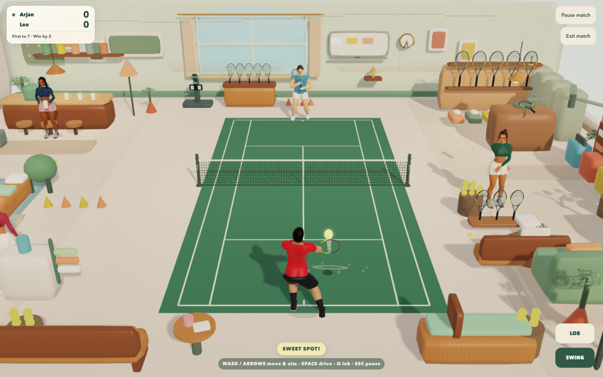
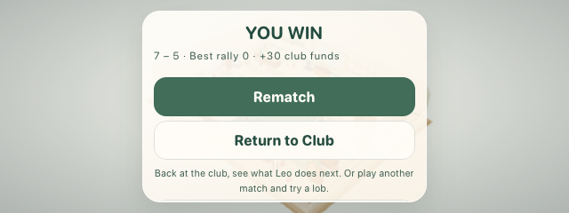
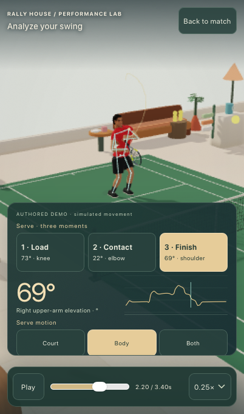
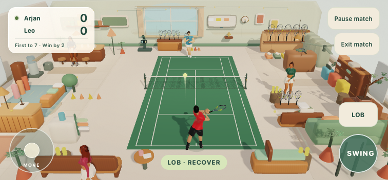
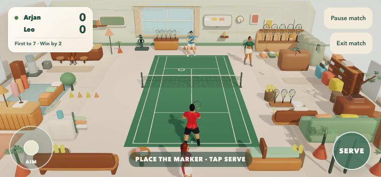
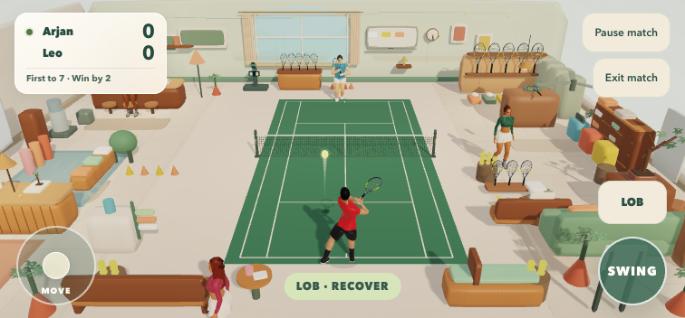
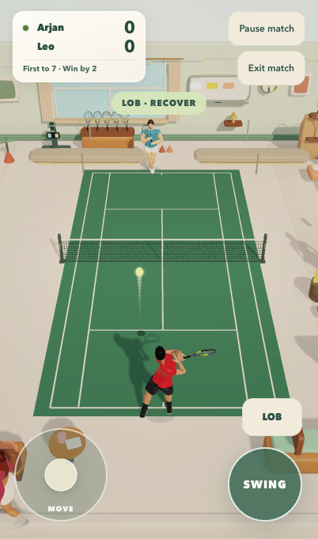
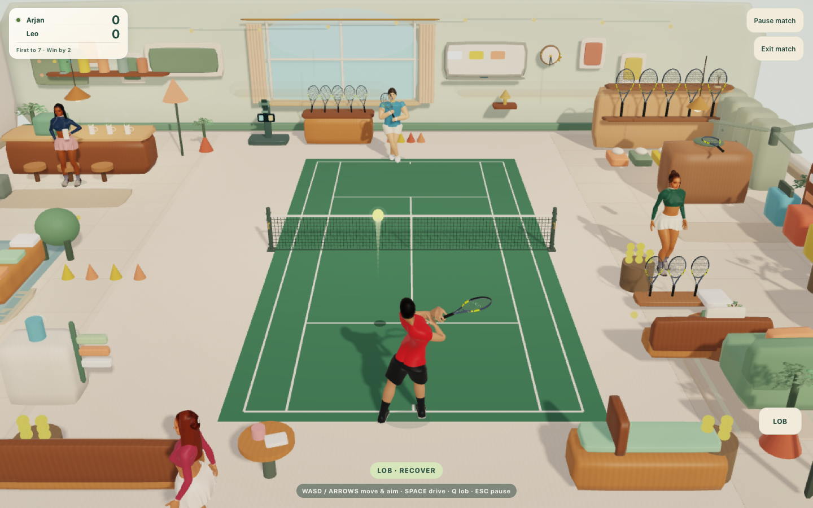
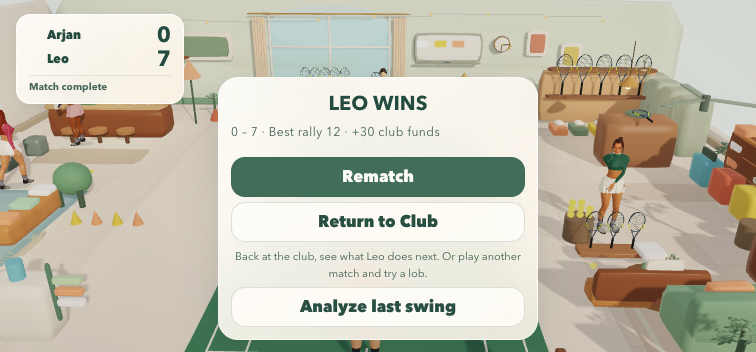
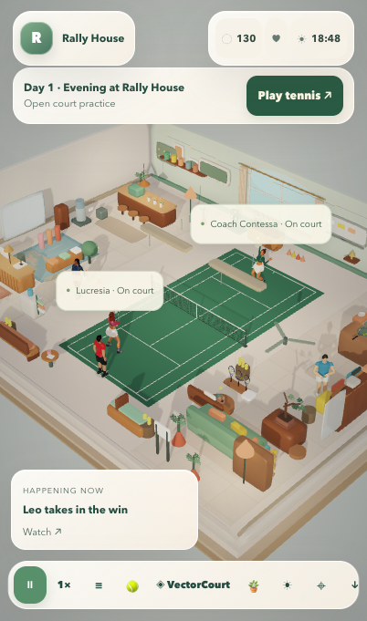

Two shot choices.
A match the club remembers.
This study adds a slower, deeper lob, differentiates forward pressure from deep retrieval, and connects match outcomes to the opponent’s next club activity. It also fixes player-shot scatter depending on opponent configuration.
Evaluation build. No production release. Automated evidence is recorded separately from human enjoyment, phone heat, battery use and speaker quality.
WebKit frame-stall fix
The club now rejects unavailable invitations before calculating walking routes. In paired 40-second traces, the maximum simulation update fell from 42ms to 5ms, with zero frames above 50ms in the revised run. Graphics and resolution are unchanged. These measurements do not establish physical iPhone performance.
Ten minutes passed: 174 shot inputs, five rematches, six replay reviews, no console errors. Window p95 stayed at 21–22ms; ten of 36,742 frame intervals exceeded 50ms. Remaining outliers are retained in the report.
Latest browser polish
Pointer players now have visible Swing and Lob controls. Replay closes back into a responsive match, and short result screens keep both actions reachable. Changes and verification.

Actual pointer-driven contact in the polished build.
640 × 240 layout fixture · final score and reachable actions.
Portrait serve analysis · authored demo is labeled.
WebKit touch emulation · left movement, right shot controls.The latest normal gameplay and demo-analysis checks have zero console errors. Earlier reports below are preserved as historical evidence.
Before and after

Baseline · existing match and controls.
Slice · lob in flight; movement and Swing keep their positions.Portrait and desktop

402 × 681 · 76 × 48 Lob target, above Swing.
WebKit desktop · keyboard drive and lob reach actual contact.Watch the portrait input check · Watch the WebKit landscape check
The match continues in the club

Completed match · optional rematch or club return.
Observed follow-up · saved outcome survives reload.Contact sound
Five actual browser-rendered contacts at a fixed volume: gentle drive, medium drive, strong drive, strong perfect contact, medium lob. No extra normalization. Phone speaker listening remains pending.
Evidence
Browser-session reports only pass when their passed field is true. WebKit completed ten minutes but failed its strict console gate on native media-icon errors also reproduced without game code. Missing or incomplete reports are not results. Rematches here are automated, not voluntary player choices.